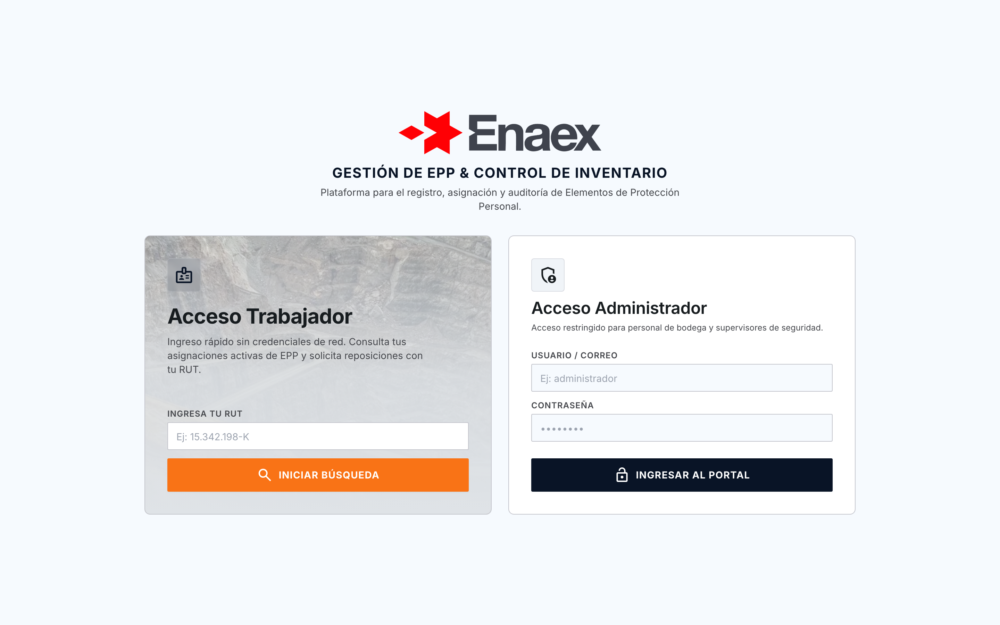
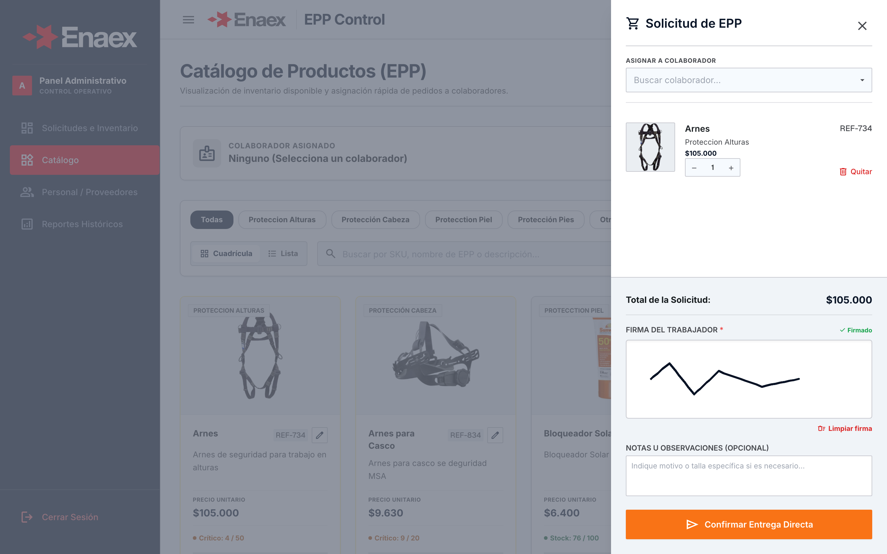
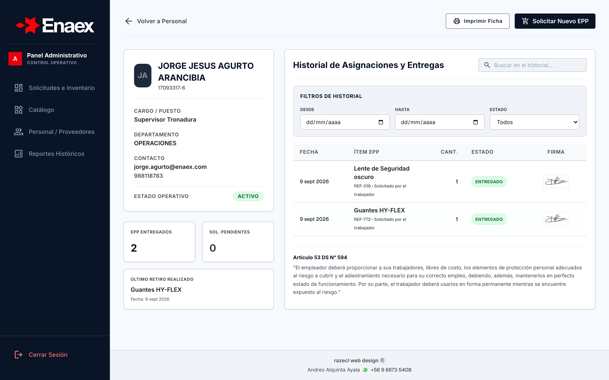
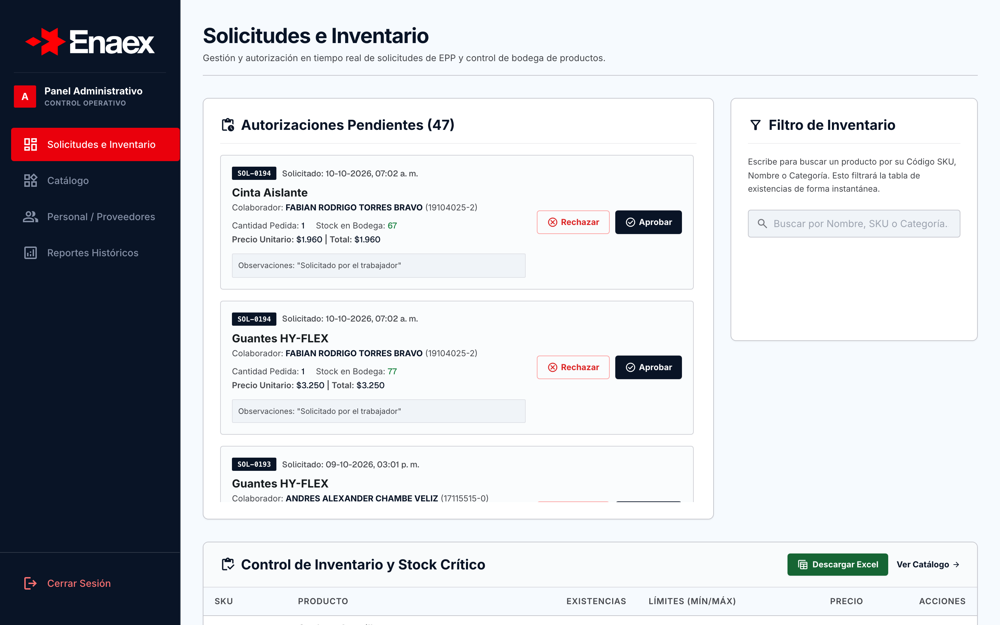
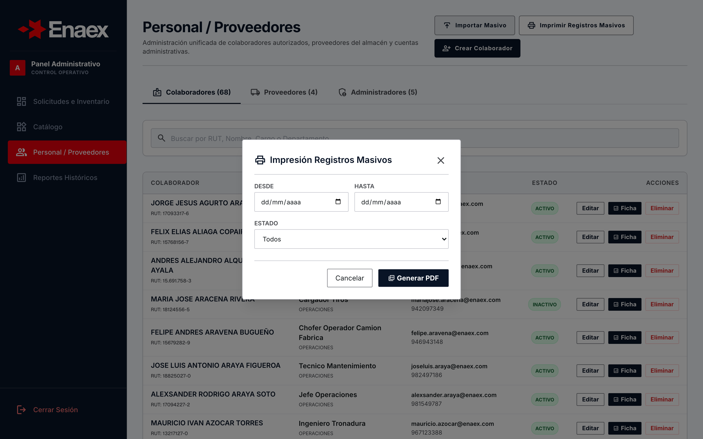

Acceso Rápido y Roles Diferenciados
Diseñado para eliminar fricciones operativas en terreno, separando la experiencia rápida del operario de faena frente al control total de bodega.
Ingreso directo por RUT con motor de autocompletado predictivo en tiempo real. Permite que cualquier trabajador consulte su saldo de EPP y solicite reposiciones en menos de 5 segundos.
Ingreso protegido con credenciales encriptadas para pañoleros, supervisores de seguridad y administradores. Permite autorizaciones, compras, auditorías y edición de nóminas.

Catálogo y Firma Digital en Pantalla
Transforma la entrega de EPP en un proceso 100% digital, eliminando el papeleo físico y garantizando respaldo auditable al instante.
El trabajador firma con el dedo en celulares/tablets o con el mouse. Bloqueo de seguridad: El sistema impide despachar o confirmar cualquier entrega si no existe una firma válida dibujada.
Filtros por familias de riesgo: Alturas, Cabeza, Manos, Piel, Pies y Auditivo. Switch conmutable entre modo tarjeta visual y lista compacta optimizada para faena.
La firma se almacena en Supabase en formato Base64 PNG vinculada indisolublemente al ID de entrega, usuario solicitante y timestamp exacto.

Ficha del Trabajador y DS N° 594
Consolidación integral de la hoja de vida de EPP de cada colaborador, con filtros dinámicos, visualización de firmas y respaldo normativo chileno.
Filtra por Rango de Fechas (Desde / Hasta) y Estado (Aprobado, Pendiente, Rechazado). El botón "Imprimir Ficha" genera el reporte físico conteniendo estrictamente las entregas filtradas.
Cumplimiento directo con la ley: el documento emitido acredita la entrega libre de costo y la obligación de uso permanente ante la Dirección del Trabajo y Seremi de Salud.
Cada retiro realizado muestra la rúbrica exacta capturada al momento del despacho, impidiendo suplantaciones y reclamos posteriores.

Dashboard Operativo y Stock Crítico
Centro de comando para personal de pañol y supervisores de seguridad, optimizado para rápida toma de decisiones y despacho sin demoras.
Bandeja de solicitudes emitidas por colaboradores en terreno. El supervisor aprueba o rechaza con un solo clic, descontando el inventario automáticamente.
Identificación visual de EPPs bajo el límite de seguridad (stock mínimo), permitiendo anticipar órdenes de compra antes de que falte equipo en faena.
Descarga de la planilla maestra de inventario valorizado para cruces contables y balances con ERP de la compañía.

Impresión Masiva para Auditorías
Generación automatizada de expedientes consolidados de entrega de EPP, preparada para responder a fiscalizaciones laborales sin esfuerzo manual.
Ubicado en el módulo Personal / Proveedores. Abre un asistente modal con filtros de fecha (Desde / Hasta) y estado de entrega.
Filtra a nivel de base de datos sin sobrecargar la memoria del cliente. Trae únicamente los registros requeridos para la fiscalización.
Ordena por Departamento ➔ Trabajador ➔ Fecha. Genera cada ficha con el diseño formal idéntico y firma digital, aplicando saltos de página CSS automáticos (1 ficha por hoja).
